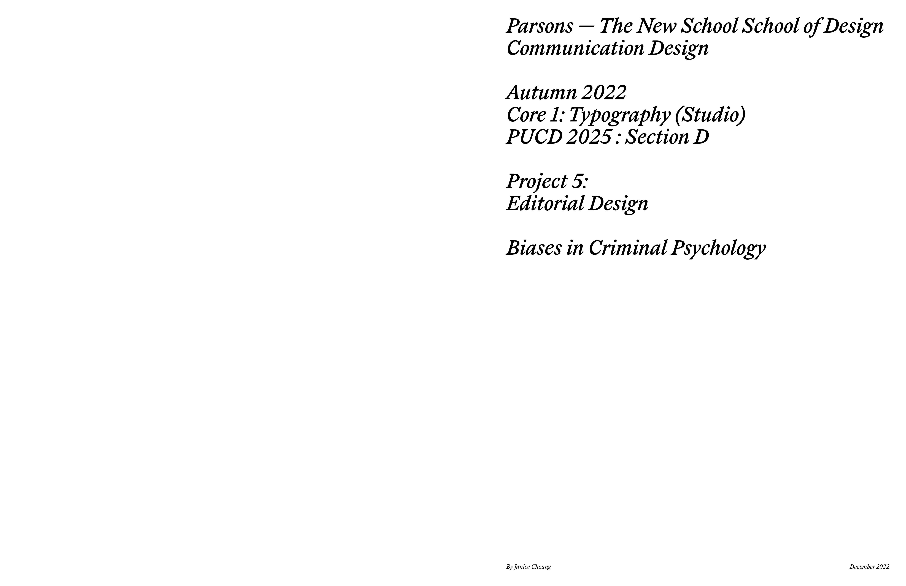

EDITORIAL DESIGN
for CORE 1: TYPOGRAPHY with Scott Vander Zee (FALL 2022): PROJECT #5

Brief:
For this project, select a series of articles, topic that you are interested in, take content copy and paste from online, could be multi themed but one big idea. Work with content from a topic you think is important/interested in and talking about.
The topic explored in this project is Biases in Criminal Psychology and the content used in this project was found online.
Typefaces used in this project:
